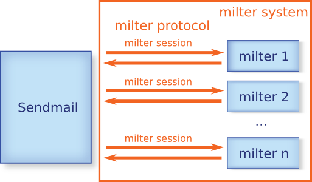
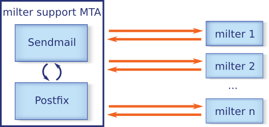
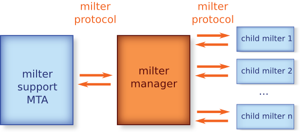

| milter manager Reference Manual |
|---|
This document describes the following advantages by introducing milter manager:
reduce milter administration cost
combine milters flexibly
This document describes about milter because this document doesn't assume that readers knows milter.
milter is an abbreviation for ' m ail f ilter '. It is an mail filter plugin system developed by Sendmail. We can introduce spam mail filter and/or virus check filter to Sendmail without modifying Sendmail by milter. We can also implement more effective mail filter by combining multiple features because multiple milters can be applied concurrently.
We confirm terms used in milter manager's documents before we show a figure that describes relation between Sendmail and milter.
The term "milter" is used as "mail filter plugin system" and "mail filter plugin". In the documents, we use other terms for them:
milter: mail filter plugin
milter system: mail filter plugin system
milter and Sendmail isn't same process. milter works as another process. milter and Sendmail is communicated with dedicated protocol. The protocol is called as "milter protocol" in the documents. Communication between Sendmail connects and takes off a milter is called "milter session".
Here is a figure that describes relation between Sendmail and milter with terms as mentioned above:

Many milters has been developed since Sendmail provides milter system. We can search registered milters at <URL:https://www.milter.org/> . There are 62 milters in the site at 2008/12. There are many milters that isn't registered at milter.org. It seems that there are more than 100 milters. For example:
A milter for using anti-virus free software ClamAV . (including in ClamAV) |
|
A milter for using general content check free software amavisd-new . |
|
A milter for using anti-spam free software SpamAssassin . |
Some new anti-spam implementations are implemented as milter. Implemented milters will be increased in the future.
Originally, milter system is dedicated system for Sendmail but Postfix starts supporting milter system since 2.3. It means that we can use and development mail filter that is used with both Sendmail and Postfix. It makes milter more portable.

milter can be used with any milter system support MTA like Sendmail and Postfix. But configuration for using milter is different in all MTAs. We can share same milter with both Sendmail and Postfix but cannot share effective milter combination configuration.
There are many anti-spam techniques. But there is not the perfect technique. We need to combine some techniques. All techniques have a weakness. For example, it doesn't have false detection but low detection rate, it has high detection rate but long processing time, it has high detection rate but high load and so on.
We need to use some techniques with using its advantages and covering its weaknesses because there are many spam techniques in the Internet.
There are two big kinds of anti-spam techniques, content based technique and connection based technique. Content based technique use mail content for detecting spam mail. Connection based technique doesn't use mail content, just use connected host, from address, recipient addresses and so on for detecting spam mail.
Connection based technique has good detection rate and more lower load than content based technique. But it will not work well against spam mails that uses normal mail server like Gmail. But content based technique will be able to detect spam mails that can't be detected by connection based technique.
Here is a mainstream anti-spam technique at 2008/12.
detects most spam mails by connection based technique.
detects spam mails that can't be detected by connection based technique by content based technique.
There are some connection based techniques, Greylisting that denies delivered a mail at first and accepts only retransmitted mail, blacklist that uses blacklist database to detect spam and so on. Most commertial products use their own blacklist database. Most free softwares use DNSBL that uses DNS for accessing blacklist database. S25R (Selective SMTP Rejection) doesn't use database, just use some regular expressions.
If we use Greylisting and/or DNSBL, retransmission and/or network connection are occurred. They are low load but occurs deliver delay and/or long processing time. If a delivered mail is not spam clearly, (e.g. submitted from localhost, submitted by authorized user and so on) we can skip those techniques to avoid delay.
Here is an example to use those techniques with using its advantages and covering its weaknesses:
detects spam by S25R
spam: detects spam by DNSBL
spam: detects spam by Greylisting
retransmitted: not spam
not retransmitted: spam
not spam: skip Greylisting
not spam: skip both DNSBL and Greylisting
In the above example, Greylisting is apllied only if both S25R and DNSBL detects spam. It reduces false delay by Greylisting. It also uses Greylisting for maintaining S25R's whitelist. S25R has a weakness that needes to maintain whitelist by hand but it is covered by combined with Greylisting.
As mentioned above, we can create effective anti-spam technique by combine each techniques.
Many anti-spam techniques are implemented as milter. How to configure Sendmail or Postfix to use milters effectively.
Both Sendmail and Postfix apply registered milters to all mails. We cannot apply milters only if some condition is true as mentioned above. [1]
Sendmail can specify default action and timeout for each milter but Postfix can specify them only for all milters.
milter is useful because there are many implementation and uses with other MTA. But we can't use it effectively because MTA doesn't support flexible milter apply configuration.
milter manager is a free software to use milter's advantages effectively.
milter manager is a milter that manages multiple milters. We can register multiple milters to milter managers and a milter session for milter manager is transferred to registered milters. Registered milter is called "child milter".
milter manager works as a proxy. milter manager looks like a milter from MTA side. milter manager looks like an MTA from child milter.

milters can be managed by milter manager layer not MTA layer by the structure. milter manager has the following features that improve milter management:
milter detection feature
flexible milter apply feature
The former is for "reduce milter administration cost" advantage, the the latter is for "combine milters flexibly" advantage.
We can use milters effectively by milter manager's those features.
milter manager embeds Ruby interpreter. Ruby is a real programming language that provides easy to read syntax and flexibility.
milter manager can configure milters more flexible than existing MTA because milter manager's configuration file is processed as a Ruby script. For example, milter manager can detect milters installed in your system and register it. It means that you can change each milter's configuration without updating milter manager's configuration.
Currently, Ubuntu (Debian) and FreeBSD are supported. If you want to use milters installed by package system (dpkg or ports), you don't need to change milter manager's configuration. If a milter is installed by package system and enabled, milter manager detects and uses it. See Install for more information.
There is a opinion that milter manager's configuration file has more difficult syntax than MTA's configuration file. As mentioned above, Ruby has easy to read syntax, it's not difficult in normal use. [2]
For example, here is a configuration for connection socket:
manager.connection_spec = "inet:10025@localhost"
It's almost same as Postfix's configuration syntax. ("item = value")
milter manager will also provide Web interface for configuration since the next release.
In MTA configuration, each milter always applies or not. It can't be done that a milter applies only when some conditions are true. milter manager has some check points in milter session. They can be used for it.
We can decide whether apply a milter or not by using S25R result by the feature.
We have effect about performance by introducing milter manager. But the effect is very small because milter manager works fast enough. So, it seems that the effect is none. milter manager will not be bottleneck.
Registered child milters to milter manager are applied only if some conditions are true. It means that child milters doesn't run if they aren't needed. But registered milters to MTA are always ran. Total processing time for milter system is almost same as milter system without milter manager or less than milter system without milter manager because the number of child milters to be ran are less than the number of whole milters.
there is milter that introduces mail filter to MTA
anti-spam and anti-virus can be implemented as milter
Sendmail and Postfix support milter
anti-spam techniques have advantages and weaknesses
to use anti-spam techniques effectively, we need to combine some techniques
milter has advantages and weaknesses
advantages:
can be used with other MTA
there are many implementations
weakness:
it's hard to maintain configuration of MTA and milter because configurations for MTA and milter are separated
MTA doesn't provide configuration for combining milters effectively
we can use milters effectively and cover milters' weakness by using milter manager
[1] We can use SMTP Access Policy Delegation for Postfix for combining S25R and Greylisting.
[2] At least, it's more easier rather than Sendmail's one.